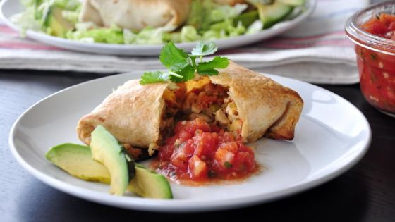
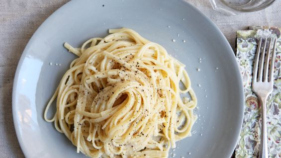
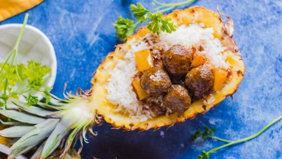
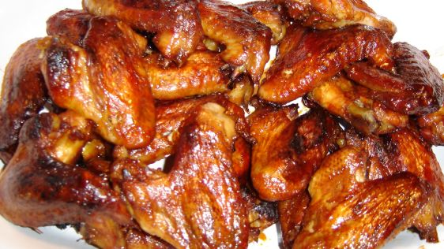
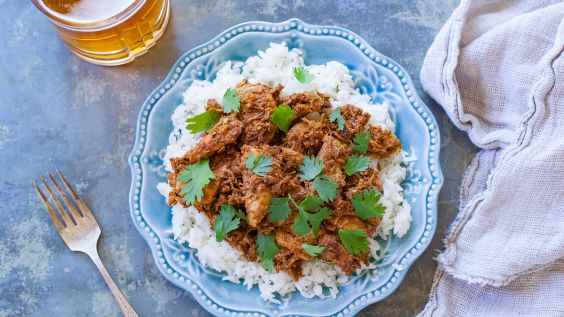

A delicious, rich and tasty cold chicken salad! Whipped cream gives this a lift.
Serve on a lettuce leaf or in sandwiches.

Chicken Chimichangas
A fast and healthier way to serve Chimichangas than the traditional deep fried.

Fettuchine Alfredo
Fettuccine Alfredo or fettuccine al burro 'fettuccine with butter' is an Italian pasta dish of fresh fettuccine tossed with butter and Parmesan cheese.

Pineapple Meatballs
Cooking time includes the browning of the meatballs, although you can brown them in the oven on a cookie sheet and make the sauce at the same time, saving yourself a little time.

Chicken Wings
A Buffalo wing, in the cuisine of the United States, is an unbreaded chicken that is generally deep-fried then coated or dipped in a sauce consisting of a vinegar-based cayenne pepper hot sauce and melted butter prior to serving.

Chicken Vindaloo
Vindaloo or vindalho is an Indian curry dish based on the Portuguese dish carne de vinha d'alhos which is popular in Goa, Vasai, the Konkan, Kerala and other parts of India